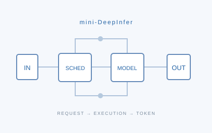

mini-DeepInfer
An inference runtime, from request to next token.
A readable inference pipeline for exploring request scheduling, model execution, and cache management.
Hi, I'm Chenxi Ma. My interests lie in LLM inference optimization, GPU systems, and reinforcement learning. I explore how model capabilities connect with the systems that execute them.
My technical interests include inference runtimes, GPU scheduling, mixture-of-experts models, and communication and computation in distributed inference. I care about how each request is scheduled and executed, all the way to the next token.
This page brings together my projects and research interests. Technical articles and experiment notes live on my separate blog.
Exploring efficient model execution and reliable reasoning and decision-making.

An inference runtime, from request to next token.
A readable inference pipeline for exploring request scheduling, model execution, and cache management.